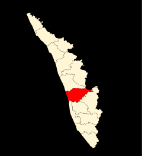
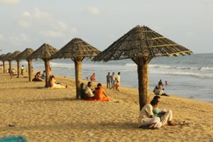

Areekkal Waterfalls
Areekkal falls is a must see beautiful place in Kochi, Its 35 kilometers away from the main city on the Ernakulam – Thodupuzha road. One can reach Areekkal falls within one hour travel from kochi main city.

Previous
Next
St. Cherai Beach
Cherai Beach is flaunted as one of the excellent beach in the Kerala. It’s a picturesque which looks more beautiful with green groves and paddy field.
Ernakulam bordering the district of Thrissur in the north, Idukki in the East, Alapuzha and Kottayam in the south, Lakshadweep Sea in the
west is an amalgam of a hoary heritage and global growth of industry and commerce. For the outside world, Ernakulam is part of Kochi referred
to in the history of Kerala as the Queen of Arabian Sea. The densely populated Ernakulam District embodies the achievements of the Kerala
State in literacy, industry, trade and commerce. With an inclusive culture, relatively high per capita income and an unstoppable interest of
the people in updating themselves of the political, economic, social and cultural happenings in the national and international spheres,
Ernakulam represents the high modern phase of the Kerala society.
The district is famous for its ancient Hindu temples, churches, and Mosques. The district includes the largest metropolitan region of the state, Greater Cochin.
The district is famous for its ancient Hindu temples, churches, and Mosques. The district includes the largest metropolitan region of the state, Greater Cochin.